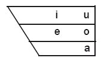
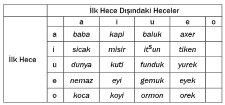

Ayşenur Kolivar[258]
Bu çalışmada, Rize ili Çayeli ilçesinin Karaağaç ve Çeşmeli köylerinde konuşulan Türkçe ağzın ses bilimsel özellikleri incelenmektedir. Bu iki köyde kullanılan Türkçe ağız, Karaağaç ve Çeşmeli ağzı bundan sonara kısaca KÇA olarak gösterilecektir. Çayeli’nin 11 km. güneyinde bulunan bu köyler kültürel coğrafya itibarıyla Doğu Karadeniz dağlarının Rize ve Artvin’deki sırtlarını kapsayan Hemşin kültür alanı içerisinde yer alır. Birçok araştırmacı, (Türkiye sınırları içerisindeki) Hemşin kültür alanını Doğu (ya da Hopa) Hemşin ve Batı (ya da Baş) Hemşin olarak ikiye ayırmaktadır. Bu ayrım coğrafi temelli görünmesine rağmen aslında dilsel bir ayrımdır: Batı Ermenice’nin bir ağzı olan Hemşincenin[259] Doğu Hemşin’de konuşulmasına karşılık Batı Hemşin’de konuşulmadığı iddia edilmektedir. Ancak, Batı Hemşin bölgesinde yer alan Karaağaç ve Çeşmeli köylerinde Türkiye Türkçesi’nin Kuzeydoğu Anadolu koluna bağlı bir ağzın[260] yanı sıra Hemşince’nin de anadil olarak konuşulduğu tespit edilmiştir.
Çalışmanın Metodolojisi
KÇA konusunda yazılı kaynak bulunmadığı için, bu çalışma 2004 yılı içerisinde yürütülen alan çalışmasında elde edilen veriler temel alınarak yazılmıştır. Alan çalışmasında üç aşamalı bir görüşme yöntemi uygulanmıştır. İlk aşama olan edilgen gözlem aşamasında, ağız konusunda bilgi edinmek amacıyla farklı kaynak kişilerden kayıt alınmıştır. İkinci aşamada, toplanan veriler incelendikten sonra kaynak kişilerle dolaylı sorular sorulmak suretiyle görüşmeler yapılmış ve KÇA’nın ses bilimsel özelliklerine dair önermeler geliştirilmiştir. Üçüncü aşamada, geliştirilen önermeleri sınamak ve kuraldışı durumları belirlemek amacıyla uygun kaynak kişilerle doğrudan sorular sorulmak suretiyle görüşmeler yapılmıştır. Özellikle işitme sorunu olan çok yaşlı kişilerle yapılan görüşmelerde ve iletişim dili olarak kullanılan Ölçünlü Türkçe’nin (ÖT) anlaşılmadığı durumlarda KÇA’yı bilen bir kişi aracı olmuştur. Görüşmelerde video kamera kaydı yapılmış ve yazılı bir görüşme formu doldurulmuştur. Video ile kayıt almanın bir sorun yaratmamasına karşın, verilen yanıtların yazılı olarak kayıt edilmesi kaynak kişileri rahatsız ettiğinden görüşme formları kayıt sonrasında doldurulmuştur.
İstanbul ve İzmit’te başlayan görüşmelere 2004 yılı Ocak ayı içerisinde Çeşmeli ve Karaağaç köylerinde devam edilmiştir. Kaynak kişilerin seçiminde yaş, cinsiyet, eğitim düzeyi, bireyin ÖT’ye aşinalığı, başka dil bilip bilmediği, köyün hangi mahallesinde ikamet ettiği ve aile özellikleri göz önünde bulundurulmuştur. 20’si erkek, 50’si kadın olmak üzere toplam 70 kadar kaynak kişiden kayıt alınmıştır. Uzun süre bölge dışında bulunmuş erkek kaynak kişilerde ağız özelliklerinin korunmadığı gözlendiğinden görüşmelerde kaynak kişi olarak daha çok kadınlar tercih edilmiş ve çalışmanın verilerinin büyük bölümü kadınlardan alınan kayıtlar üzerine kurulmuştur. Kaynak kişilerin bilgisi ve rızası dışında hiçbir ses ve görüntü kaydı alınmamıştır. Yaşlı kişiler ve çocuklarla yapılan görüşmelerde gerek kendilerinden gerekse ailelerinden izin alınmıştır. Bu çalışmada KÇA’nın ses bilimsel ve biçimsel ses bilimsel özellikleri incelenmiştir.
Ses Bilimsel özellikler
Burada KÇA’nın ünlü sistemi, ünlü uyumu ve ünsüz sistemleri kısaca ele alınacaktır.
Ünlü Sistemi:
KÇA’da /i e a u o/ sesbirimleri bulunmaktadır. Bu sesbirimler birbirlerinden ön/arka, düz/yuvarlak ve kapalı/açık boyutlarıyla ayrılırlar.

Tablo 1: KÇA ünlü sistemi
Beşli ünlü sistemi KÇA’ya özgü değildir ve birçok Trabzon ve Rize ağzında da görülür.[261] Brendemoen, “Doğu Karadeniz ağızlarında neden /ı/, /ü/, /ö/’den kaçınma eğilimi vardır”[262] sorusunu Trabzon ağızları için şöyle yanıtlamaktadır:
(...) bu durum ancak yabancı dillerin etkisiyle, ya da Lars Johanson’un terminolojisiyle yabancı dillerden kod kopyalanmasıyla açıklanabilir (...) Burada söz konusu olan dil esas itibarıyla Rumcadır, (...) /ı/, /ü/ ve /ö/’yü kullanmama eğilimi, Rumca’nın sesbirim envanterinin Türkçe’ninkine kısmen kabul ettirilmesinden kaynaklanmaktadır. Rumca’nın ünlü sisteminde beş sesbirim vardır, “tipik Türkçe” olanlar yani /ı/, /ü/ ve /ö/ yoktur.[263]
KÇA’nın konuşulduğu coğrafyada Türkçe dışında konuşulan başlıca dil olan Hemşince’nin[264] beşli ünlü sistemine sahip olduğu düşünüldüğünde, KÇA’nın beşli ünlü sisteminin de, Brendemoen’un önerisine benzer bir şekilde, Hemşince’den kod kopyalanmasıyla oluştuğu düşünülebilir.
Ünlü Uyumu:
KÇA’nın diğer bir önemli ses bilimsel özelliği de ünlü uyumu bulunmamasıdır. Türkçe bir ağızda ünlü uyumundan söz edebilmek için, sözcük dağarcığı içerisinde bulunan sözcüklerde kullanılabilecek ünlü dizilerine dair kısıtlamalar olması gerekir. Bu çalışmada, KÇA’da tespit edilen tek kısıtlama Türkçe kökenli kelimelerde /o/ ünlüsünün sözcük içerisinde ilk seslem dışında bulunamamasıdır. Bunun dışında kalan ünlülerin herhangi bir uyum gözetmeksizin sıralanabilmesi nedeniyle sözcükiçi ünlü uyumu bulunmadığı görüşüne varılmıştır. Aşağıdaki tablo köklerin içerisindeki ünlü dizimini göstermektedir.

Tablo 2: KÇA’da kök içerisindeki ünlü dizimi
Sözcükdışı ünlü uyumunun bulunmamasının nedeniyse hemen hemen tüm eklerin ünlülerinin sabit olması ve eklendiği kökün ünlülerine göre değişmemesidir. Örneğin –łer çoğul ekine bakıldığında kendisinden önce gelen kök ünlüsünün ön ya da arka ünlü olmasına bakmaksızın her zaman ön ünlülü, tek şekilli olduğu görülmektedir.
Tablo 3: –łer eki kullanımına dair örnekler